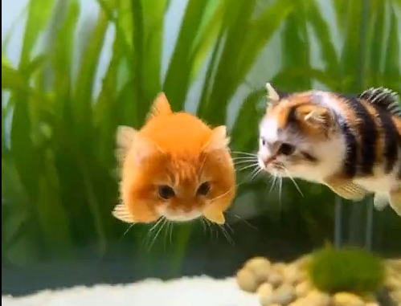

Gato Peixe

Ficha Técnica:
Nome: Gato Peixe
Nomes alternativos: Gato Baiacu, Peixe Gato, Felino Aquático
Raça: Gato
Tipo da raça: Aquático
Nivel de ameaça: Nulo
Características físicas:
- Corpo arredondado que se assemelha a um peixe baiacu
- Capacidade de inflar o corpo quando se sente ameaçado
- Pelagem com padrão de escamas em tons de cinza e branco
- Olhos grandes e arregalados permanentemente
- Bigodes longos que funcionam como barbatanas sensoriais
Capacidades:
- Respiração subaquática por tempo indeterminado
- Capacidade de inflar o corpo em até 3x seu tamanho original
- Quando inflado, libera uma toxina leve que causa dormência temporária
- Nada a velocidades superiores a qualquer peixe conhecido
- Comunicação com espécies aquáticas
Fraquezas:
- Extremamente lento em terra firme
- Quando inflado, fica completamente imóvel por alguns segundos
- Não resiste a ambientes com temperaturas acima de 35°C
- Facilmente atraído por iscas de peixe comum
Como contê-lo:
O Gato Peixe é relativamente dócil fora da água. Se encontrado em ambiente terrestre, basta oferecer uma bacia com água salgada e ele entrará voluntariamente. Evite tocá-lo diretamente quando inflado, pois a toxina de contato pode causar dormência nas mãos por até 6 horas.
Relato do Agente Nemo:
Agente Nemo é especialista em anomalias aquáticas e foi o primeiro a documentar o Gato Peixe em ambiente natural.
"Estávamos investigando relatos de um 'gato que nadava' na costa do Nordeste. Quando chegamos, encontramos ele flutuando tranquilamente entre os peixes. Os pescadores locais já o conheciam há anos e o chamavam de 'Baiacu Peludo'. Quando tentamos capturá-lo com uma rede, ele inflou e nossa equipe inteira ficou com as mãos dormentes. No final, ele saiu da água por conta própria e veio ronronar nos nossos pés. Acho que ele só queria atenção."
Variações:
Existem relatos de variações do Gato Peixe em água doce, porém com capacidades significativamente menores.
História:
A história do Gato Peixe ainda está sendo documentada.